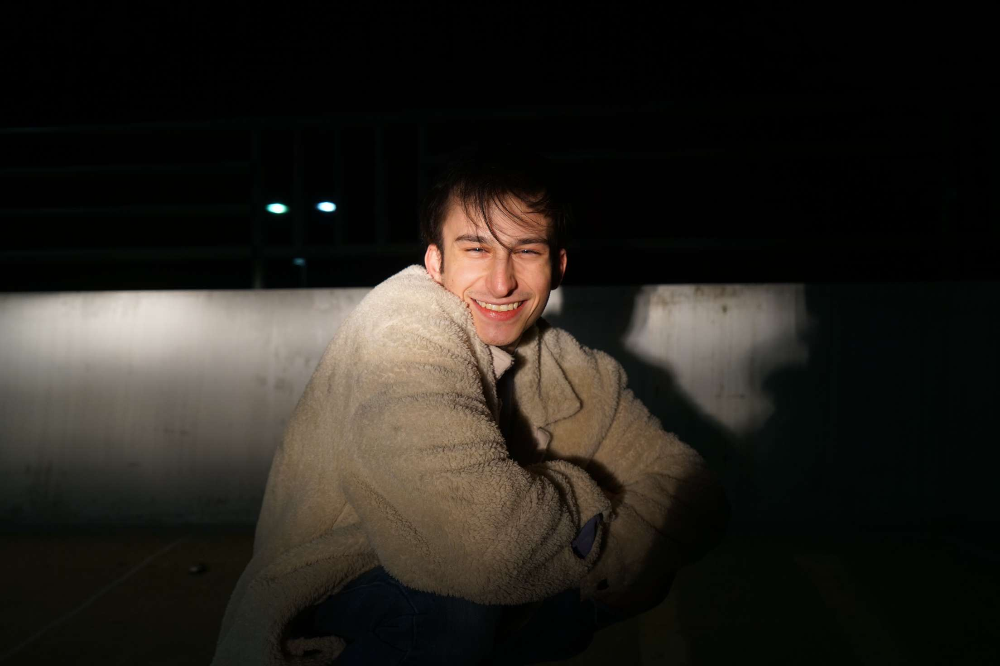

Hello, and welcome to my website, this is the first ever website I have coded, using entirely HTML and CSS. There is potential for further front-end and back-end development in the future, as my coding/programming expertise grows further. This website will primarily serve as an online portfolio, including my Curriculum Vitae, as well as my photography and digital art portfolios. I hope you enjoy the website.
I love to draw and paint, and have ever since I was very young, I enjoy a multitude of other mediums as well such as acrylic versus oil paints, and I variety of drawing tools, such as oil/ordinary pastels, colored pencils and even crayons. I even have recently picked up digital art and have completed a few designs, all of which will be featured on this page. My love of photography developed much later, the minute I got my hands on a device with a camera I immediately ran out to take as many pictures as I could and of whatever I could. This is what lead me to join Yearbook at my high-school, and I got my hands on a real-deal sort of camera (a Sony a5100) for reference). I enjoyed getting to go to many extracurricular events and getting to cover them, taking interviews, pictures, and meeting so many people along the way. Building my skills as a journalist, helped facilitate my interpersonal and personal growth through giving me new skills and expertise to take into the real world. Even now I still enjoy getting to explore Urbana-Champaign and take many beautiful photos along the way. I have also recently taken up working out and lifting weights, which has become a very enjoyable activity allowing me to release some stress and get those endorphins up.
I first entered the world of coding upon taking a statistics class that emphasized data science, and taught us using Python as our main coding language. Upon exiting that class, I still desired to pick up more coding and programming skills which lead me to SoloLearn, which I could practice and self teach myself coding through interactive lessons and coding projects, which I have been uploading to my GitHub. Through the program I am currently learning both HTML and CSS, as well as refreshing my knowledge of Python and growing it further. This website is entirely built upon my knowledge of HTML and CSS and will demonstrate my progress and proficiency in both languages. I hope to use the program to further my knowledge of programming and coding, moving from language to language, from platform to platform.
I am a current Sophomore at the University of Illinois at Urbana-Champaign, pursuing a Bachelor of Science in Brain and Cognitive Science, with hopes of also pursuing a minor in Computer Science. The program allows me to achieve an interdisciplinary approach to my studies, combining my interests of Psychology both Cognitive and Behavioral Science, Computer Science, and Philosophy. I am very interested in the fields of computational neuroscience, cognitive/behavioral processing and philosophical foundations of Cognitive Science. Due to my major I am profoundly interested in the Cognitive/Psychological Sciences and hope to one day receive a PhD in Cognitive Science. As well as that, I hope to one day attend law school, as I am very intrigued by legal studies and I am passionate about my pre-law experiences.
I have worked for Panera Bread for the past 3 years, and continue to work for them on seasonal basis due to my studies during the Fall and Spring. I have also recently been initiated into Kappa Alpha Pi: Professional Pre-law Fraternity, which involves a multitude of events such as volunteering, social events, diversity events, and law school preparation activities which include: law school meetings with admissions counselors, participating in internship fairs, and trial advocacy events such as moot court or informational sessions. I hope to join more organizations with the coming semester.